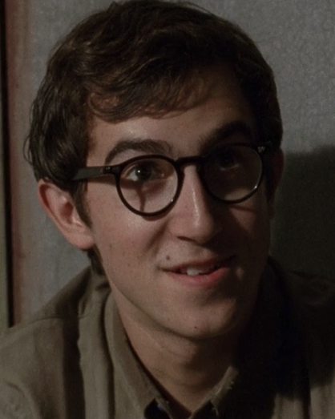
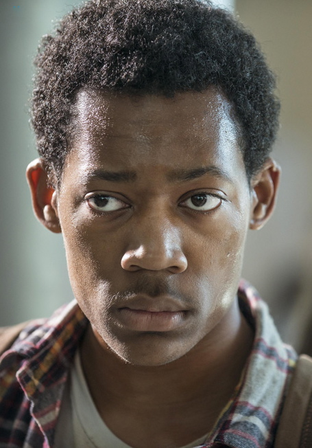
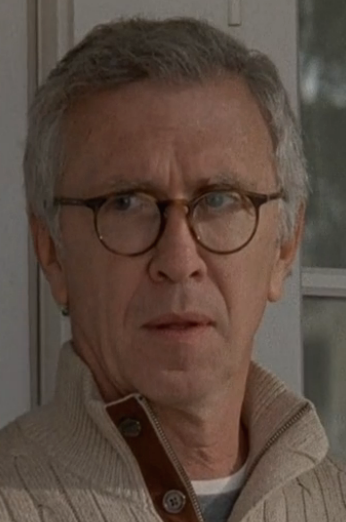

Amy - Killed by a walker outside of a trailer. Our first introduction to the idea that anyone can be killed at any time and NOWHERE IS SAFE.
Amy - Killed by a walker outside of a trailer. Our first introduction to the idea that anyone can be killed at any time and NOWHERE IS SAFE.
Ed - Killed by a walker at the campsite for being an abusive dick.
Jim - Bit by a walker. Left by a tree.
Dr. Edwin Jenner - Blew up the CDC and while in it.
Jacqui - Decided to stay at the CDC while it blew up.
Sophia - Got lost, probably bit by a walker? Yeah bit by a walker.
Otis - Shot in the leg by Shane, eaten by walkers. Very sad.
Randall - Killed by Shane in the woods and became a walker BEFORE they knew that would happen regardless of getting bit.
Patricia - Died in epic walker swarm and fire at the farmhouse, eaten up by walkers.
Jimmy - Same as Patricia.
Dale - Wandered out to the woods to check on a sound and got bitten by a lone wandering walker and had to be shot in the head by Daryl. Silly Dale.
Shane - Stabbed in the heart by Rick (while he was stabbing Rick in the back, amiright!?!)
T Dog - Eaten by a bunch of walkers while clearing the prison. Very sad.
Lori - Lost a bunch of blood while Maggie was being a badass and performing an emergency c-section. Carl had to shoot her in the head.
Merle - Killed by The Governor for being loyal to his brother Daryl. Daryl eventually finds him as a walker and puts him down.
Milton - Stabbed by The Governor and left to bleed out and turn in a locked room with Andrea. In the end redeems himself by helping Andrea put him down before he eats her.
Andrea - Left tied up in a locked room to get eaten by a turned Milton, ended up getting free but was bit anyway.

Patrick - Got a weird flu in the middle of the night, died fast, became a walker, and killed a bunch of people. Good job Patrick.
Karen - Got the Patrick flu and was killed by Carol so she wouldn't spread it to more people. Got Carol in A LOT of trouble.
Meghan - Accidentally unburied a bunch of walkers who ate her.
Hershel - Head chopped of by The Governor. We were all very sad.
The Governor - Sliced up by Michonne, shot in the head by Lilly. Go women.
Lilly - Eaten by a group of walkers.
Mika - Stabbed to death by her crazy sister Lizzie.
Lizzie - Shot by Carol because Carol has to do all the hard work.
Mary - Eaten by walkers that Caol let in, because again, Carol gets the job done.
Gareth - Killed by Rick. In a CHURCH.
Beth - Accidentally shot by Dawn, the trigger happy cop.
Dawn - Shot by everyone else.
Tyreese - Eaten by walkers after he gives up on life.
Bob - Bit by a walker, let Gareth eat his foot (TAINTED MEAT), eventually put down by Sasha.

Noah - Eaten by walkers because Dianna's sons are idiots.

Reg - Stabbed by Pete, another abusive dick.
Pete - Killed by Rick. In front of his friend Morgan who's now a pacifist.
Eastman - Bit by a walker because of a mistake Morgan made. Very sad.
Nicholas - Shot himself the FIRST time Glenn died.
Deanna - Bit by a walker, died in her bed giving adviced.
Sam - Devoured by walkers because he freaked out at the wrong time.
Jessie - Lost her mind at the sight of her son being devoured by walkers. Understandable.
Ron - Speared by Michonne after he shoots Carl.
Owen - Gets eaten by walkers in the chaos of the swarp of Alexandria.
Denise - Acidentally shot in the head by Dwight when he was aming for Daryl on a run.
Abraham - We must not speak of it...
Spencer - Literally gutted by Negan for being a prick.
Olivia - Shot by the lady savior in retaliation for Rosita's bullet.
Benjamin - Shot in the leg by one of the saviors and bled out in Carol's kitchen.
Richard - Manually strangled (..yeah) by Morgan in a plan to gain the saviors trust.
Sasha - Killed herself with Eugene's homemade suicide pill so she could turn herself into a zombie weapon to help Rick and the others.